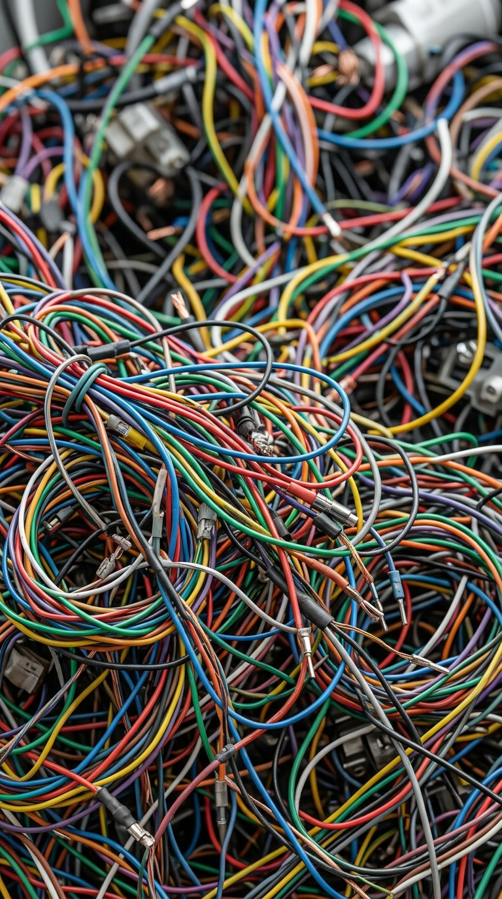

THE ENGINEERING PROBLEM
THE
TANGLED
MESS
100 KEYS × 2 WIRES = 200 TRACES
[ILLUSTRATIVE]

⚠️ 1-TO-1 WIRING = IMPOSSIBLE TO SCALE
"But wiring a hundred keys individually would create a
tangled mess
."